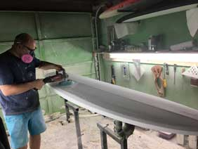
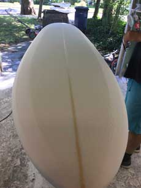
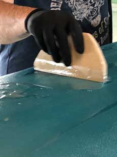
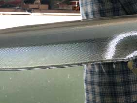
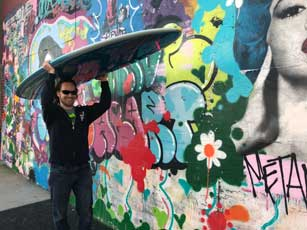

Birth of a Surf Board
When the ocean unleashes its spellbinding waves to lure me into its midst, it’s just a matter of time before I find myself out in the water in the company of a surfboard.
Whether I’m by myself in the darkness of a predawn hour or with other surfers, at high or low tide, calm water or rough texture, my board is always there with me. When the waves roll in, there’s a task at hand, it’s on the two of us to make it work. My job is to line up with the breaking wave and paddle as fast as I can to catch it at the right place. Once I push myself up to a standing position right at the drop, the board takes over and delivers us both to that blissful place where man is one with his surfboard amidst the forces of nature. The board carries my weight, it keeps me afloat and responds to my motion. When we make the drop and start riding, it absorbs the energy and momentum from the breaking wave and transforms it into speed. As a surfer, my most fundamental objective is to get to know my board the best way I can, learn its boundaries and capabilities, understand its potential and know just how far I can push it. The movement of my arms as I paddle determines whether we are going to catch a wave or miss it. The way I rise may dictate if we’re going to make the drop or get pummeled by the breaking wave. And finally, when we ride the wave, the subtleties of my posture and movement control which way we turn and how far we go. Out in the water, there’s a bond between surfer and board. It’s a dynamic relationship. The surfboard is not just a tool of recreation, it has character, it has personality. Some say It’s an extension of the surfer’s body and mind. No wonder surfers get so attached to their boards. Some give their boards names. Others write songs for them.
I was fortunate to have the pleasure of witnessing the creation, or better yet, the Birth of a Surfboard. After a ten years relationship with my 7.6 ft Challenger funboard, I felt it was a time to try something new. My first approach was to check out the local surf shops and find something that would meet my desires and budget, but a recommendation from a good friend led me to a local shaper right in my town. At first, I had my misgivings. I didn’t know what I was getting into, and I wasn’t sure if I had the budget for a custom-made board. But it was my birthday, and the Mrs. approved, so I figured I may as well give it a shot. I reached out to Drew of Gunn Surfboards and we agreed to meet at 2 pm that Saturday. My wife decided to join. After all, it was her gift to me, and she had to be there to sign off on the merchandise.
A seven-minute drive was what it took us to get to the shop. Drew came to greet us right in front. He was so genuinely friendly, I felt like I had known him for years before we even started talking. Then he took us in. From the outside, the shop looked like a modest shack, but once we stepped in, I got the feeling I had entered a place where space was boundless, and time stood still. Maybe it was the intoxicating resin fumes in the air that put a spell on me, though now in retrospect, I honestly believe that little shack is a place where true magic happens.
In the shop, we talked shop. Drew asked me for my size, height and weight, my fitness, and what kind of board I was interested in. I said I was in for a longboard, between 8 to 9 ft long. “How about 8.6,” Drew suggested, sardonically. I accepted. Last order of business, we settled on a price. It didn’t take long. What Drew asked for was very reasonable. Even my wife concurred, and she’s a tough negotiator.
A few weeks later, it was time to start shaping. Drew called me in for the first session. I was thrilled for the opportunity to be a part of it.  Earlier, Drew sent sketches of possible longboard styles for me to review. I went with the rounder head option, the one that turns better but a little harder to paddle. I wanted a quicker turn and more maneuverability, and I gave myself credit as a strong paddler, (maybe a little too much credit.)
Earlier, Drew sent sketches of possible longboard styles for me to review. I went with the rounder head option, the one that turns better but a little harder to paddle. I wanted a quicker turn and more maneuverability, and I gave myself credit as a strong paddler, (maybe a little too much credit.)
The blank board awaited right outside Drew’s shop. It looked like a bulky piece of industrial foam, the size, and general shape of a longboard. Nothing too fancy to say the least. It was time to do some shaping. We took it in, lined up the template created from the dimensions listed out in the sketch of my choice, and drew its outline on the board. Then the cutting began.  Drew used a variety of tools, a planer to carve the core, something that looked like a cheese grater to curve the rails, and a power sander (and a sanding block) to smooth it all out. He cut the top, the bottom, the pintail and round head all with artisan precision. I can’t go into specifics of what exactly Drew did with his hands and the tools that he had in his hands, frankly, because I don’t know, if I did, I would attempt at becoming a shaper myself. All I can say is that for the duration of the session, two or three hours, however long it took (like I said, it felt like time stood still,) I walked about the shop dumbfounded and awe-stricken, watching a master at his craft as that bulky piece of foam slowly shaped into an amazing looking surfboard.  When I walked out of Drew’s shop that night, it threw me back to my medic training days in the service, specifically that one afternoon I spent in the operating room, witnessing an open-heart surgery first hand. It was hard to stomach at first, but as the procedure unfolded, it became one of the most fascinating experiences I’ve had my entire life.
A few weeks would pass before the first glassing session, but during that time, I was given the task to look up design options. To be perfectly honest, up until that point, I was willing to give Drew complete creative control over the looks and colors, but since he brought it up, I started doing some research. Surprisingly, it didn’t take long before I locked on a light blue fade to white design that caught my eye as I started browsing the web. Shortly after, Drew shared his list of design templates to give me some ideas. There were many beautiful options to choose from, but my mind was made up, and I was able to convince Drew to add another template to his list. I’m not sure exactly how he did it, but the result was astounding. It certainly beat all my expectations. When Drew sent me the first post-coloring photo, I saw the Sistine Chapel of surfboards. With delicate airbrushing, Drew created a crossfade from blue to white and back to blue like a breaking wave, and the double-pinline on the edge of the rails gave it the perfect finish.
The last phase of the process was pure magic. Glassing. It’s where that beautifully shaped and colored piece of foam turns into a perfect surfboard. With all the pixie dust in the air (and resin fumes,) we had to put on safety breathing masks before we walked into the shop to minimize the intake of toxins. After laying a wide sheet of fiberglass cloth on top and cutting it under the rails to the shape of the board (again, with artisan precision,) Drew mixed a bucket of polyester resin with a few drops of curing catalyst and began spreading it on the board.  From there, it was pour-and-spread, and Drew made it look like it was a walk in the park, but there was nothing easy about it. The resin concoction had to be spread evenly, soaking the fiberglass cloth layer upon layer as the sheet remained perfectly flat on the board with its edges folded under the rails and smoothly glued to the bottom.
 We left the top to cure and returned for the bottom a few weeks later to repeat the process. The working progress was getting closer and closer to looking like a dream surfboard.
It was down to the final touchups, starting with hot/sand coating that gave the board the glossy finish, carving out slots for the fin box, and adding a plug for the leash string near the tail end.
The day finally came. The work was complete. Drew sent me the last photo with a pink leash string intact, announcing “It’s a girl!” My excitement surged. We met up at the Asbury Park boardwalk for ‘Birthday photoshoot’ and I took my baby home. 
The following weekend, I took her out for her maiden voyage. It was a small day, but I was anxious to give it a try. As soon as I put her in the water and started paddling, it felt like I was right at home. I caught a wave on my second attempt, which was great statistics, considering the low wave turnout and small size. Few weeks later, we went out on a big day and had a great time. Like Drew suggested, she’s harder to paddle in for the big waves but turns really quick and glides like a beauty. I named her Gloria, no explanation needed. We’re still getting to know each-other, but I know it’s going to be a long-lasting relationship.